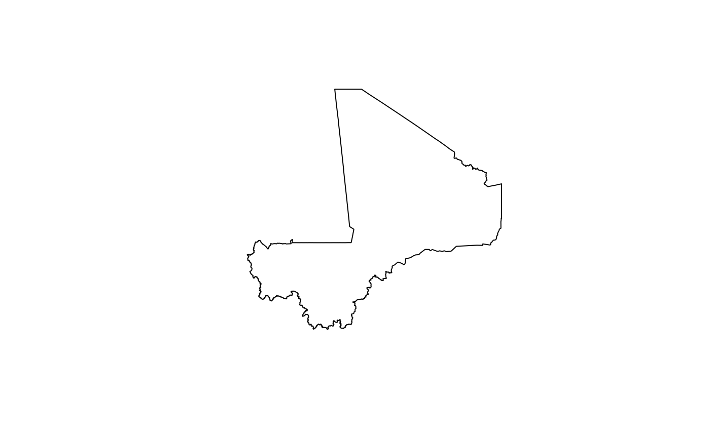

Designing surveys require relevant datasets to be used as basis for sample size calculations, sampling design, survey planning/logistics and survey implementation. These include datasets on population, lists of sampling clusters, map datasets for spatial sampling, and previous survey datasets that can be used for estimating indicator variance and design effects. This package contains relevant datasets for use in designing surveys in Mali
Installation
mali is not yet released on CRAN.
You can install the development version of mali from GitHub with:
if(!require(devtools)) install.packages("devtools")
install_github("validmeasures/mali")Usage
Accessing Mali map data
The following packages will be required when accessing and manipulating map data available from the mali package.
require(rgdal)
require(rgeos)
require(raster)Country borders
To access country borders, use the following command:
mali::mli0
#> class : SpatialPolygonsDataFrame
#> features : 1
#> extent : -12.23924, 4.24467, 10.14137, 24.99951 (xmin, xmax, ymin, ymax)
#> coord. ref. : +proj=longlat +datum=WGS84 +no_defs +ellps=WGS84 +towgs84=0,0,0
#> variables : 11
#> names : OBJECTID_1, admin0Name, admin0Pcod, admin0RefN, admin0AltN, admin0Al_1, date, validOn, validTo, Shape_Leng, Shape_Area
#> value : 1, Mali, ML, Mali, NA, NA, 2012/12/31, 2015/04/08, NA, 71.76874, 106.8238The output provides overview information on the features included in the country borders map and the variables included in the country map data. This is a summary output for a SpatialPolygonsDataFrame.
To plot the country borders, the plot() function from the sp package can be used as follows:
plot(mali::mli0)
Region borders
To access region borders, use the following command:
mali::mli1
#> class : SpatialPolygonsDataFrame
#> features : 9
#> extent : -12.23924, 4.24467, 10.14137, 24.99951 (xmin, xmax, ymin, ymax)
#> coord. ref. : +proj=longlat +datum=WGS84 +no_defs +ellps=WGS84 +towgs84=0,0,0
#> variables : 13
#> names : OBJECTID, admin0Name, admin0Pcod, admin1Name, admin1Pcod, admin1RefN, admin1AltN, admin1Al_1, date, validOn, validTo, Shape_Leng, Shape_Area
#> min values : 1, Mali, ML, Bamako, ML01, Bamako, NA, NA, 2015/04/08, 2015/04/08, NA, 0.7517338, 0.02043903
#> max values : 9, Mali, ML, Tombouctou, ML09, Tombouctou, NA, NA, 2015/04/08, 2015/04/08, NA, 33.7798722, 43.15657700The output provides overview information on the features included in the region borders map and the variables included in the region map data. This is a summary output for a SpatialPolygonsDataFrame.
To plot the region borders, the plot() function from the sp package can be used as follows:
plot(mali::mli1)Cercle borders
To access cercle borders, use the following command:
mali::mli2
#> class : SpatialPolygonsDataFrame
#> features : 50
#> extent : -12.23924, 4.24467, 10.14137, 24.99951 (xmin, xmax, ymin, ymax)
#> coord. ref. : +proj=longlat +datum=WGS84 +no_defs +ellps=WGS84 +towgs84=0,0,0
#> variables : 15
#> names : OBJECTID, admin0Name, admin0Pcod, admin1Name, admin1Pcod, admin2Name, admin2Pcod, admin2RefN, admin2AltN, admin2Al_1, date, validOn, validTo, Shape_Leng, Shape_Area
#> min values : 1, Mali, ML, Bamako, ML01, Abeibara, ML0101, Abeibara, NA, NA, 2015/04/08, 2015/04/08, NA, 0.7517338, 0.02043903
#> max values : 9, Mali, ML, Tombouctou, ML09, Youwarou, ML0901, Youwarou, NA, NA, 2015/04/08, 2015/04/08, NA, 26.0765915, 28.80383259The output provides overview information on the features included in the cercle borders map and the variables included in the cercle map data. This is a summary output for a SpatialPolygonsDataFrame.
To plot the cercle borders, the plot() function from the sp package can be used as follows:
plot(mali::mli2)Commune borders
To access commune borders, use the following command:
mali::mli3
#> class : SpatialPolygonsDataFrame
#> features : 701
#> extent : -12.23924, 4.24467, 10.14137, 24.99951 (xmin, xmax, ymin, ymax)
#> coord. ref. : +proj=longlat +datum=WGS84 +no_defs +ellps=WGS84 +towgs84=0,0,0
#> variables : 17
#> names : OBJECTID_1, admin0Name, admin0Pcod, admin1Name, admin1Pcod, admin2Name, admin2Pcod, admin3Name, admin3Pcod, admin3RefN, admin3AltN, admin3Al_1, date, validOn, validTo, ...
#> min values : 1, Mali, ML, Bamako, ML01, Abeibara, ML0101, Abeibara, ML010101, Abeibara, NA, NA, 2013/05/31, 2015/04/08, NA, ...
#> max values : 99, Mali, ML, Tombouctou, ML09, Youwarou, ML0901, Zegoua, ML090106, Zegoua, NA, NA, 2013/05/31, 2015/04/08, NA, ...The output provides overview information on the features included in the commune borders map and the variables included in the commune map data. This is a summary output for a SpatialPolygonsDataFrame.
To plot the commune borders, the plot() function from the sp package can be used as follows:
plot(mali::mli3)Bamako borders
To access Bamako borders, use the following command:
mali::bamako
#> class : SpatialPolygonsDataFrame
#> features : 71
#> extent : -8.081477, -7.91215, 12.50289, 12.71143 (xmin, xmax, ymin, ymax)
#> coord. ref. : +proj=longlat +datum=WGS84 +no_defs +ellps=WGS84 +towgs84=0,0,0
#> variables : 19
#> names : OBJECTID, admin0Name, admin0Pcod, admin1Name, admin1Pcod, admin2Name, admin2Pcod, admin3Name, admin3Pcod, admin4Name, admin4Pcod, admin4RefN, admin4AltN, admin4Al_1, date, ...
#> min values : 1, Mali, ML, Bamako, ML09, Bamako, ML0901, Commune I, ML090101, Babouillabougou, ML090101001, Babouillabougou, Babouillabougou, NA, 2013/05/31, ...
#> max values : 9, Mali, ML, Bamako, ML09, Bamako, ML0901, Commune VI, ML090106, Zone Industrielle, ML090106903, Zone Industrielle, Zone industriel, NA, 2013/05/31, ...The output provides overview information on the features included in the bamako borders map and the variables included in the bamako map data. This is a summary output for a SpatialPolygonsDataFrame.
To plot the bamako borders, the plot() function from the sp package can be used as follows:
plot(mali::bamako)